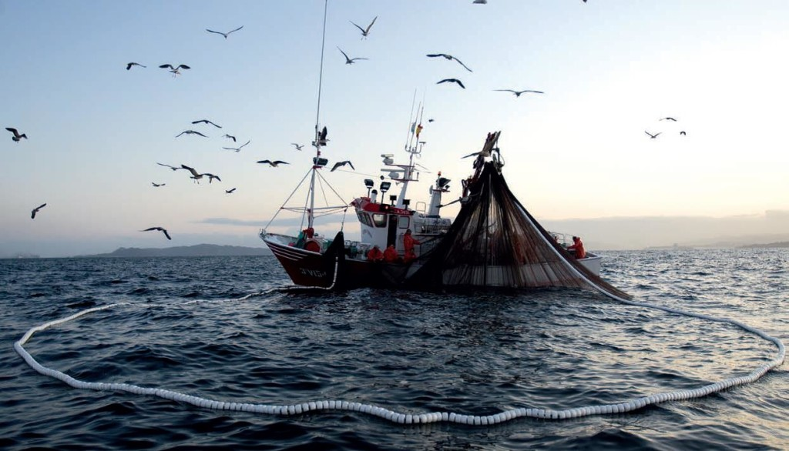

The presence of these plastics means a loss of aesthetic value of the places where they are present, with negative economic implications for the tourism industry, therefore affects the economy of countries.
They are also a threat to many industries based on the sea or in coastal areas such as: navigation, fishing, aquaculture, production of hydraulic energy, etc. By the entanglements or damages to the equipment, as well as by the damage of fish that is one of the main consumptions in certain countries or states.

Another consequence is due to the abundant amount of plastic particles, certain animals, as fish ingest them, later through fishing we ingest these fish, consuming small parts of plastic that eventually cause severe health diseases, such as colitis, gastrointestinal infection , etc.